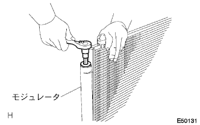

コンデンサASSY (ウィズ レシーバ) 組み付け |
| 1. クーラ ドライヤ取り付け |
 |
プライヤーを使用して、クーラドライヤを取り付ける。
 |
Oリングにコンプレッサオイル(ND-OIL８)を充分に塗布する。
|  |
ストレートヘキサゴンレンチ14を使用して、新品のキヤツプW/フイルターをモジユレータに取り付ける。
| 2. クーラ コンデンサ クッション NO.1取り付け |
クーラコンデンサクツシヨンNo.1をコンデンサブラケツトカラーNo.1に取り付ける。
 |
ボルト２本で、クーラコンデンサクツシヨンNo.1 2個をコンデンサブラケツトカラーNo.1と一体で取り付ける。